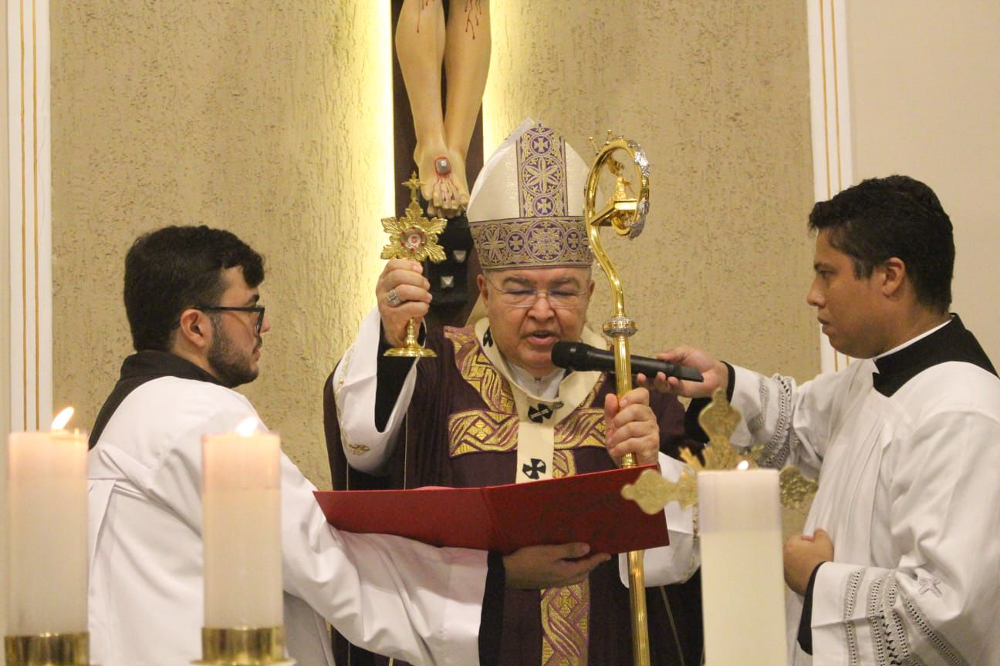

Celebrações do Santuário
Horários de Missa
A Eucaristia é o coração do Santuário. Venha celebrar conosco.
Calendário semanal
Missas de domingo a sábado
Celebrações fixas do Santuário, todas as semanas. O dia de hoje aparece em destaque.
Hoje
1ºUma vez por mês
Igreja fechada
Uma vez por mês
Missas votivas
Na primeira sexta-feira e no primeiro sábado de cada mês, às 8h.
Agenda
Celebrações especiais
Venha nos visitar
Como chegar
Estrada Manuel Nogueira de Sá, 1421
Realengo — Rio de Janeiro / RJ